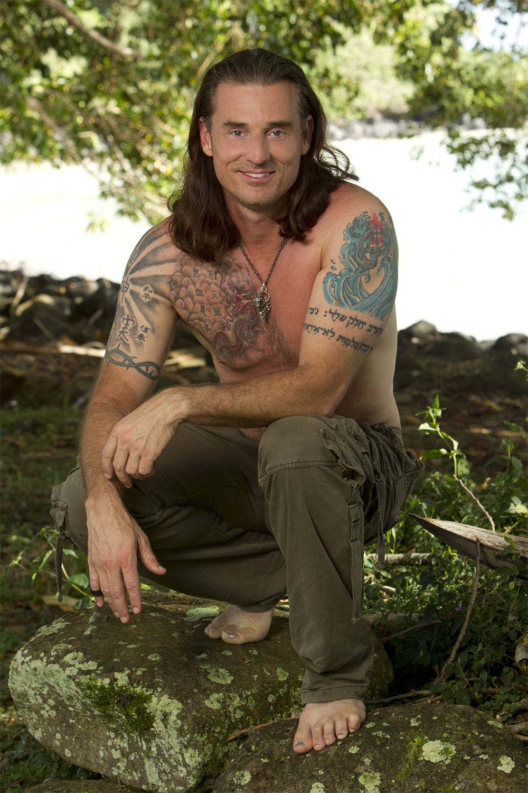
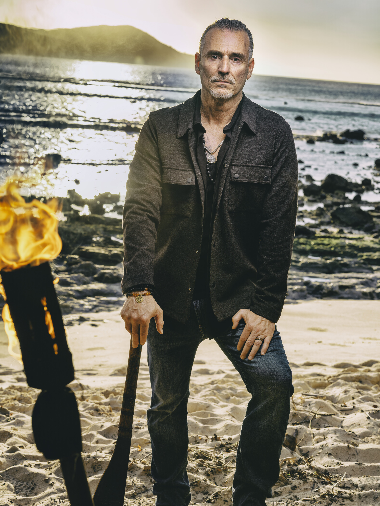

Benjamin "Coach" Wade


Episode 1
Coach was sent on the Journey challenge (volunteered by Tiffany) against Ozzy and Q. In a dramatic finish, he swooped in to win supplies for the tribe and returned as the camp hero. The tribe did a "Coach chant and dance" for him. He gave Charlie his toe ring as a loyalty gesture and promised Jonathan he'd "never vote him out." However, Mike White revealed to others that Coach embellished details about the challenge win.
Episode 2
Coach clashed with Ozzy over "honor" at the reward challenge, reigniting their South Pacific rivalry. He tried to "set the record straight" about stealing the key from Ozzy at the Day 1 challenge, but Ozzy called him just as phony as he was years ago. Mike White stoked the flames between them. Coach also suffered severe leg cramps while fishing with Jonathan, and the tribe mocked his physical decline — Dee called him "old and dismantled."
Alliances
The most connected player on Kalo. Allied with Chrissy (strategic partner), Charlie (toe ring bond), and Jonathan (loyalty promise). But his physical decline and the generational divide are working against him. Mike's campaign to expose Coach's embellishments threatens his credibility.
About
Coach is one of Survivor's most iconic and entertaining characters. He first appeared on Tocantins (Season 18) with his tales of adventure and self-proclaimed warrior spirit. He returned for Heroes vs. Villains (Season 20) and then led a dominant alliance on South Pacific (Season 23), making it to the Final Tribal Council but losing the jury vote. He is among the players openly advocating for fewer twists and a back-to-basics approach to the game.